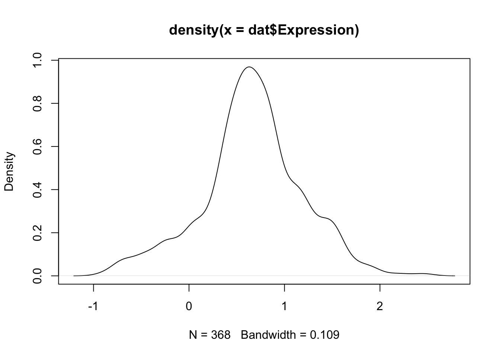
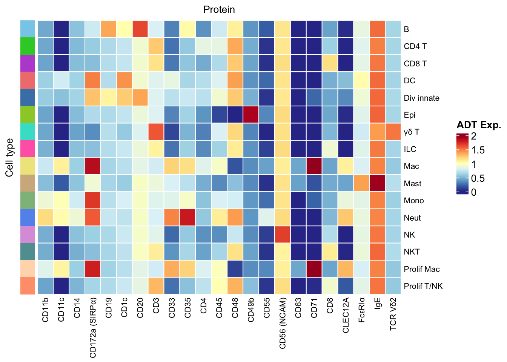
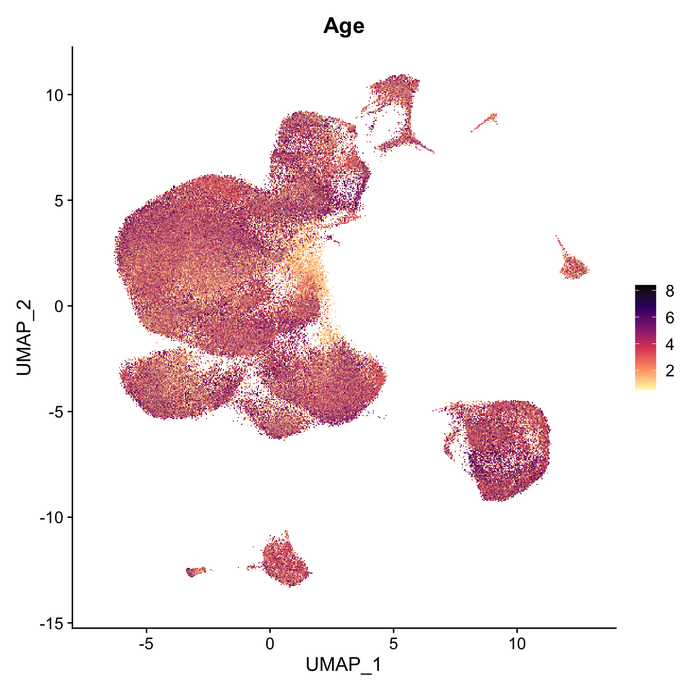
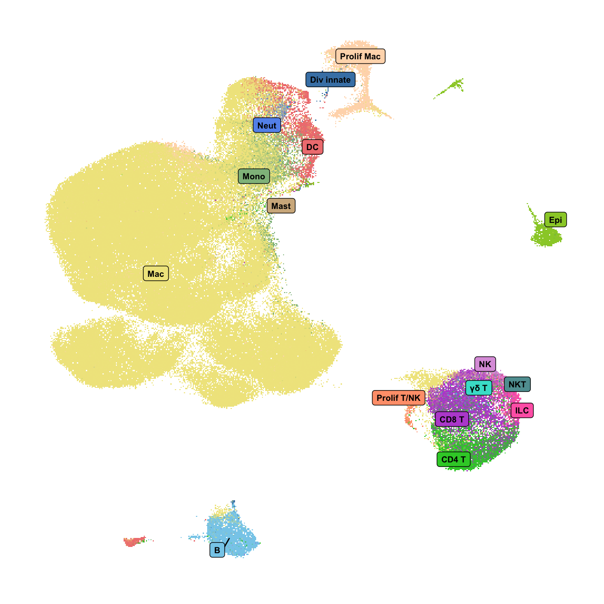
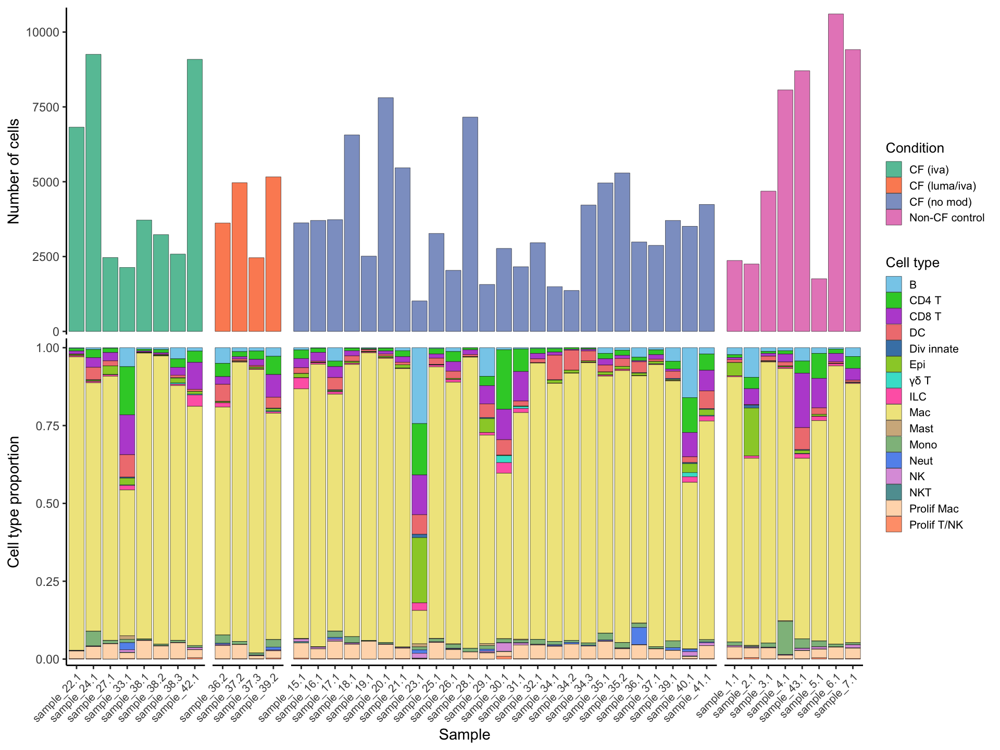
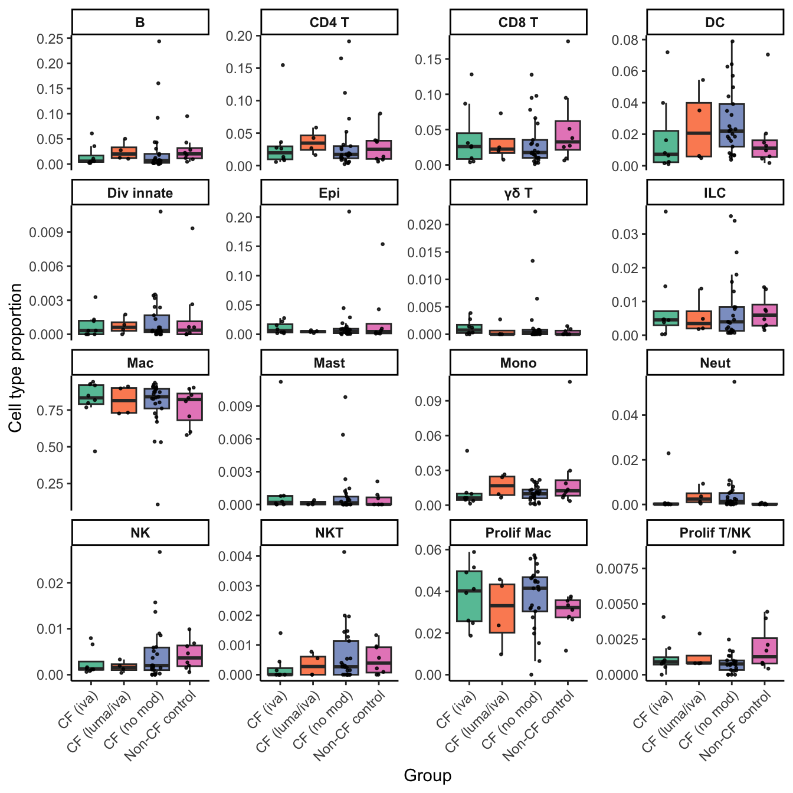
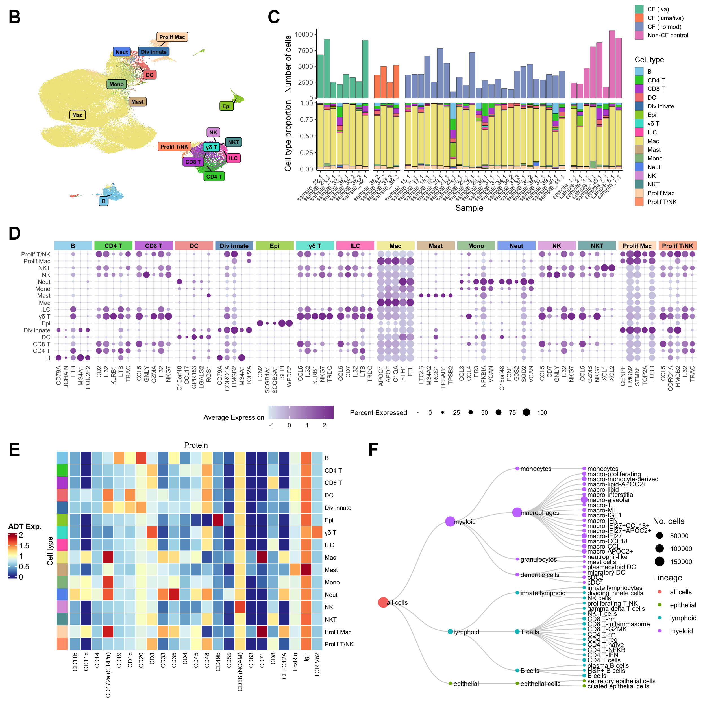
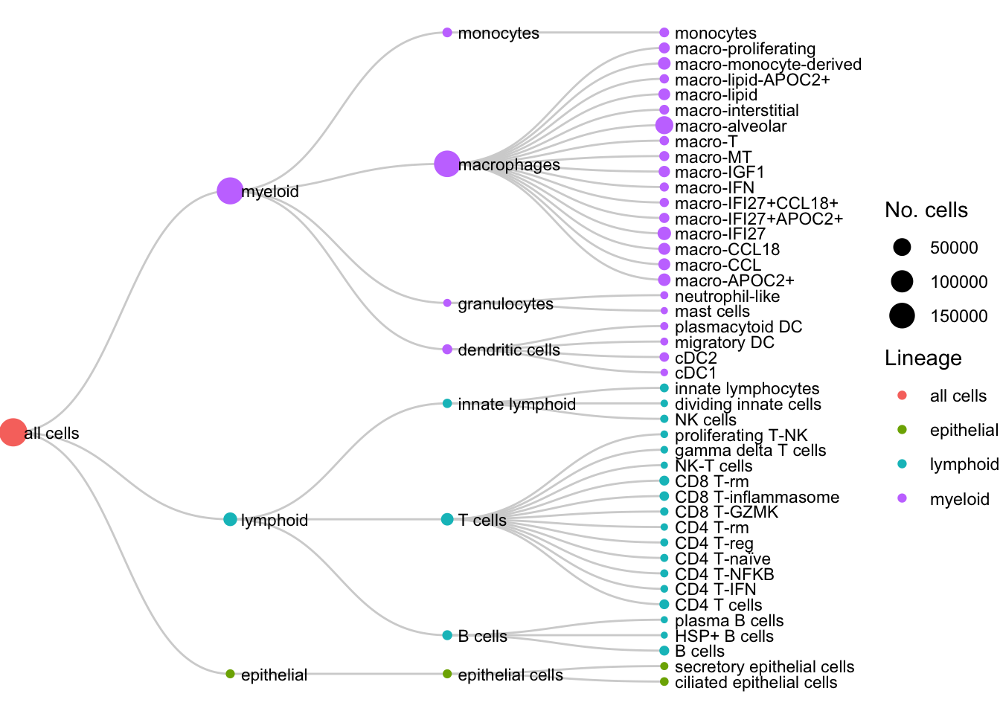
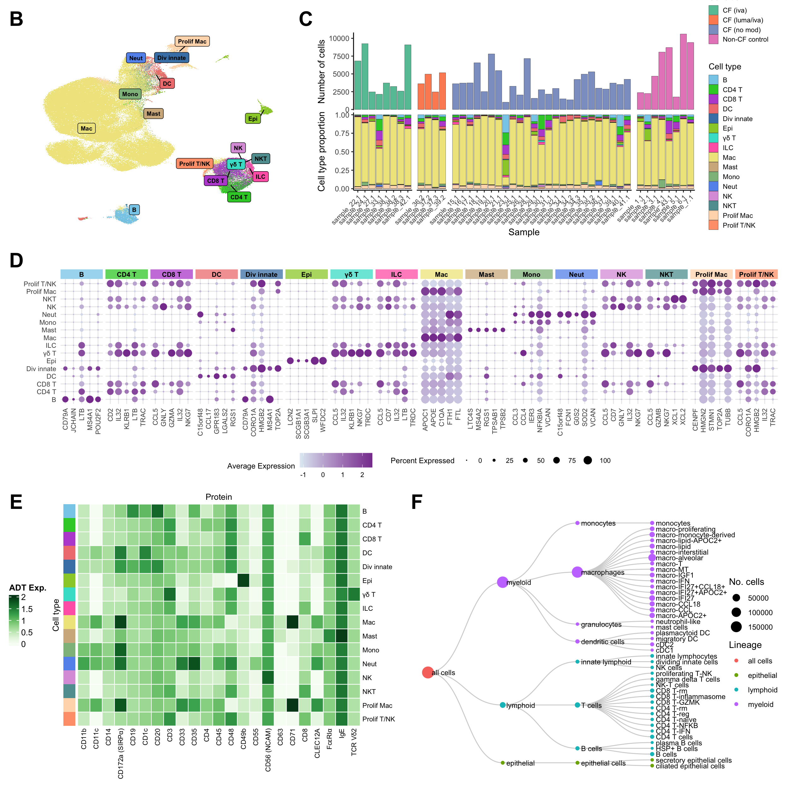

Figure 1
Jovana Maksimovic
March 23, 2026
Last updated: 2026-03-23
Checks: 7 0
Knit directory:
paediatric-cf-inflammation-citeseq/
This reproducible R Markdown analysis was created with workflowr (version 1.7.1). The Checks tab describes the reproducibility checks that were applied when the results were created. The Past versions tab lists the development history.
Great! Since the R Markdown file has been committed to the Git repository, you know the exact version of the code that produced these results.
Great job! The global environment was empty. Objects defined in the global environment can affect the analysis in your R Markdown file in unknown ways. For reproduciblity it’s best to always run the code in an empty environment.
The command set.seed(20240216) was run prior to running
the code in the R Markdown file. Setting a seed ensures that any results
that rely on randomness, e.g. subsampling or permutations, are
reproducible.
Great job! Recording the operating system, R version, and package versions is critical for reproducibility.
Nice! There were no cached chunks for this analysis, so you can be confident that you successfully produced the results during this run.
Great job! Using relative paths to the files within your workflowr project makes it easier to run your code on other machines.
Great! You are using Git for version control. Tracking code development and connecting the code version to the results is critical for reproducibility.
The results in this page were generated with repository version aa9cc97. See the Past versions tab to see a history of the changes made to the R Markdown and HTML files.
Note that you need to be careful to ensure that all relevant files for
the analysis have been committed to Git prior to generating the results
(you can use wflow_publish or
wflow_git_commit). workflowr only checks the R Markdown
file, but you know if there are other scripts or data files that it
depends on. Below is the status of the Git repository when the results
were generated:
Ignored files:
Ignored: .Rhistory
Ignored: .Rproj.user/
Ignored: analysis/.DS_Store
Ignored: code/obsolete/
Ignored: data/.DS_Store
Ignored: data/C133_Neeland_batch0/
Ignored: data/C133_Neeland_batch1/
Ignored: data/C133_Neeland_batch2/
Ignored: data/C133_Neeland_batch3/
Ignored: data/C133_Neeland_batch4/
Ignored: data/C133_Neeland_batch5/
Ignored: data/C133_Neeland_batch6/
Ignored: data/C133_Neeland_merged/
Ignored: data/Neeland_processed_data_1.h5ad
Ignored: data/Neeland_processed_data_2.h5ad
Ignored: data/Neeland_processed_data_3.h5ad
Ignored: data/intermediate_objects/.DS_Store
Ignored: data/updated_h5ad_files/
Ignored: renv/library/
Ignored: renv/staging/
Untracked files:
Untracked: analysis/14.2_DGE_analysis_ciliated-epithelial-cells.Rmd
Untracked: analysis/cellxgene_submission.Rmd
Untracked: analysis/epithelial_cell_analysis.Rmd
Untracked: analysis/epithelial_cell_analysis.nb.html
Untracked: data/GOBP_CYTOKINE_MEDIATED_SIGNALING_PATHWAY.v2025.1.Hs.tsv
Untracked: data/cellxgene_cell_ontologies_ann_level_3.xlsx
Untracked: data/gencode.v44.primary_assembly.annotation.gtf
Untracked: data/intermediate_objects/prop.ann_level1.all.fit.rds
Untracked: data/intermediate_objects/prop.ann_level3.macrophages.fit.rds
Untracked: data/intermediate_objects/prop.ann_level3.non-macrophages.fit.rds
Untracked: output/dge_analysis/epithelial cells/
Untracked: output/pdf_figures/
Unstaged changes:
Modified: .DS_Store
Modified: analysis/13.0_DGE_analysis_macrophages.Rmd
Modified: analysis/13.1_DGE_analysis_macro-alveolar.Rmd
Modified: analysis/13.2_DGE_analysis_macro-APOC2+.Rmd
Modified: analysis/13.3_DGE_analysis_macro-CCL.Rmd
Modified: analysis/13.4_DGE_analysis_macro-IFI27.Rmd
Modified: analysis/13.5_DGE_analysis_macro-lipid.Rmd
Modified: analysis/13.6_DGE_analysis_macro-monocyte-derived.Rmd
Modified: analysis/13.7_DGE_analysis_macro-proliferating.Rmd
Modified: analysis/14.0_DGE_analysis_CD4-T-cells.Rmd
Modified: analysis/14.1_DGE_analysis_CD8-T-cells.Rmd
Modified: analysis/14.2_DGE_analysis_DC-cells.Rmd
Modified: analysis/15.0_proportions_analysis_ann_level_1.Rmd
Modified: analysis/15.1_proportions_analysis_ann_level_3_non-macrophages.Rmd
Modified: analysis/15.2_proportions_analysis_ann_level_3_macrophages.Rmd
Modified: analysis/16.3_Figure_4.Rmd
Modified: analysis/16.4_Figure_5.Rmd
Modified: analysis/16.6_Supplementary_Figure_2.Rmd
Modified: data/intermediate_objects/macrophages.CF_samples.fit.rds
Modified: data/intermediate_objects/macrophages.all_samples.fit.rds
Modified: output/dge_analysis/macrophages/CAM.FIBROSIS.CF.IVAvCF.NO_MOD.csv
Modified: output/dge_analysis/macrophages/CAM.FIBROSIS.CF.IVAvNON_CF.CTRL.csv
Modified: output/dge_analysis/macrophages/CAM.FIBROSIS.CF.LUMA_IVAvCF.NO_MOD.csv
Modified: output/dge_analysis/macrophages/CAM.FIBROSIS.CF.NO_MOD.SvCF.NO_MOD.M.csv
Modified: output/dge_analysis/macrophages/CAM.FIBROSIS.CF.NO_MODvNON_CF.CTRL.csv
Modified: output/dge_analysis/macrophages/CAM.GO.CF.IVAvCF.NO_MOD.csv
Modified: output/dge_analysis/macrophages/CAM.GO.CF.IVAvNON_CF.CTRL.csv
Modified: output/dge_analysis/macrophages/CAM.GO.CF.LUMA_IVAvCF.NO_MOD.csv
Modified: output/dge_analysis/macrophages/CAM.GO.CF.NO_MOD.SvCF.NO_MOD.M.csv
Modified: output/dge_analysis/macrophages/CAM.GO.CF.NO_MODvNON_CF.CTRL.csv
Modified: output/dge_analysis/macrophages/CAM.HALLMARK.CF.IVAvCF.NO_MOD.csv
Modified: output/dge_analysis/macrophages/CAM.HALLMARK.CF.IVAvNON_CF.CTRL.csv
Modified: output/dge_analysis/macrophages/CAM.HALLMARK.CF.LUMA_IVAvCF.NO_MOD.csv
Modified: output/dge_analysis/macrophages/CAM.HALLMARK.CF.NO_MOD.SvCF.NO_MOD.M.csv
Modified: output/dge_analysis/macrophages/CAM.HALLMARK.CF.NO_MODvNON_CF.CTRL.csv
Modified: output/dge_analysis/macrophages/CAM.REACTOME.CF.IVAvCF.NO_MOD.csv
Modified: output/dge_analysis/macrophages/CAM.REACTOME.CF.IVAvNON_CF.CTRL.csv
Modified: output/dge_analysis/macrophages/CAM.REACTOME.CF.LUMA_IVAvCF.NO_MOD.csv
Modified: output/dge_analysis/macrophages/CAM.REACTOME.CF.NO_MOD.SvCF.NO_MOD.M.csv
Modified: output/dge_analysis/macrophages/CAM.REACTOME.CF.NO_MODvNON_CF.CTRL.csv
Modified: output/dge_analysis/macrophages/CAM.WP.CF.IVAvCF.NO_MOD.csv
Modified: output/dge_analysis/macrophages/CAM.WP.CF.IVAvNON_CF.CTRL.csv
Modified: output/dge_analysis/macrophages/CAM.WP.CF.LUMA_IVAvCF.NO_MOD.csv
Modified: output/dge_analysis/macrophages/CAM.WP.CF.NO_MOD.SvCF.NO_MOD.M.csv
Modified: output/dge_analysis/macrophages/CAM.WP.CF.NO_MODvNON_CF.CTRL.csv
Modified: output/dge_analysis/macrophages/CF.IVAvCF.NO_MOD.csv
Modified: output/dge_analysis/macrophages/CF.IVAvNON_CF.CTRL.csv
Modified: output/dge_analysis/macrophages/CF.LUMA_IVAvCF.NO_MOD.csv
Modified: output/dge_analysis/macrophages/CF.NO_MOD.SvCF.NO_MOD.M.csv
Modified: output/dge_analysis/macrophages/CF.NO_MODvNON_CF.CTRL.csv
Modified: output/dge_analysis/macrophages/ORA.GO.CF.IVAvNON_CF.CTRL.csv
Modified: output/dge_analysis/macrophages/ORA.GO.CF.NO_MOD.SvCF.NO_MOD.M.csv
Modified: output/dge_analysis/macrophages/ORA.GO.CF.NO_MODvNON_CF.CTRL.csv
Modified: output/dge_analysis/macrophages/ORA.HALLMARK.CF.IVAvCF.NO_MOD.csv
Modified: output/dge_analysis/macrophages/ORA.REACTOME.CF.NO_MODvNON_CF.CTRL.csv
Note that any generated files, e.g. HTML, png, CSS, etc., are not included in this status report because it is ok for generated content to have uncommitted changes.
These are the previous versions of the repository in which changes were
made to the R Markdown (analysis/16.0_Figure_1.Rmd) and
HTML (docs/16.0_Figure_1.html) files. If you’ve configured
a remote Git repository (see ?wflow_git_remote), click on
the hyperlinks in the table below to view the files as they were in that
past version.
| File | Version | Author | Date | Message |
|---|---|---|---|---|
| Rmd | aa9cc97 | Jovana Maksimovic | 2026-03-23 | wflow_publish("analysis/16.0_Figure_1.Rmd") |
| html | f0ac59b | Jovana Maksimovic | 2025-09-10 | Build site. |
| Rmd | d121b7e | Jovana Maksimovic | 2025-09-10 | wflow_publish("analysis/16.0_Figure_1.Rmd") |
| Rmd | 6691547 | Jovana Maksimovic | 2025-08-13 | Updated Figure 1 code to add cell type dendrogram. |
| html | 15e0d6f | Jovana Maksimovic | 2025-02-20 | Build site. |
| Rmd | bbe91a3 | Jovana Maksimovic | 2025-02-20 | wflow_publish("analysis/16.0_Figure_1.Rmd") |
| html | 360908b | Jovana Maksimovic | 2025-02-17 | Build site. |
| Rmd | 0246a56 | Jovana Maksimovic | 2025-02-17 | wflow_publish("analysis/16.0_Figure_1.Rmd") |
Load libraries.
suppressPackageStartupMessages({
library(SingleCellExperiment)
library(edgeR)
library(tidyverse)
library(ggplot2)
library(Seurat)
library(glmGamPoi)
library(dittoSeq)
library(here)
library(clustree)
library(patchwork)
library(AnnotationDbi)
library(org.Hs.eg.db)
library(glue)
library(speckle)
library(tidyHeatmap)
library(paletteer)
library(dsb)
library(ggh4x)
library(readxl)
})
source(here("code/utility.R"))Prepare figure panels
ADT heatmap
Load the ADT data from save, pre-processed objects.
files <- list.files(here("data/C133_Neeland_merged"),
pattern = "C133_Neeland_full_clean.*(macrophages|t_cells|other_cells)_annotated_full.SEU.rds",
full.names = TRUE)
# read in the ADT data, excluding everything else
seuLst <- lapply(files, function(f){
s <- readRDS(f)
DefaultAssay(s) <- "ADT"
DietSeurat(s, assays = "ADT", dimreducs = NULL)
})
adt_names <- rownames(seuLst[[1]][["ADT"]]@counts)
seuLst <- lapply(seuLst, function(s){
DefaultAssay(s) <- "ADT"
if(!all(rownames(s) == adt_names)){
adt_counts <- s[["ADT"]]@counts
rownames(adt_counts) <- adt_names
CreateSeuratObject(counts = adt_counts,
assay = "ADT",
meta.data = s@meta.data)
} else {
s
}
})
seuADT <- merge(seuLst[[1]],
y = c(seuLst[[2]],
seuLst[[3]]))
seuADT <- seuADT[, seuADT$Batch != 0]
seuADTAn object of class Seurat
163 features across 168859 samples within 1 assay
Active assay: ADT (163 features, 0 variable features)Normalise the ADT data across all cells using DSB.
# read in TotalSeq feature information
read_csv(file = here("data",
"C133_Neeland_batch1",
"data",
"sample_sheets",
"ADT_features.csv")) -> adt_data
pattern <- "anti-human/mouse |anti-human/mouse/rat |anti-mouse/human "
adt_data$name <- gsub(pattern, "", adt_data$name)
out <- here("data",
"C133_Neeland_merged",
glue("C133_Neeland_full_clean_all_cells_dsb.ADT.rds"))
if(!file.exists(out)){
adt_data %>%
dplyr::filter(grepl("[Ii]sotype", name)) %>%
pull(name) -> isotype_controls
# normalise ADT using DSB normalisation
adt_dsb <- ModelNegativeADTnorm(cell_protein_matrix = seuADT[["ADT"]]@counts,
denoise.counts = TRUE,
use.isotype.control = TRUE,
isotype.control.name.vec = isotype_controls)
saveRDS(adt_dsb, file = out)
} else {
adt_dsb <- readRDS(out)
}
seuADT[["ADT"]]@data <- adt_dsb
seuADTAn object of class Seurat
163 features across 168859 samples within 1 assay
Active assay: ADT (163 features, 0 variable features)Set up mapping for long cell type labels to short labels.
labels <- unique(seuADT$ann_level_3)
# Make a lookup table: label -> ann_level_1/2/3
hier_lut <- tibble(label = labels) %>%
mutate(
ann_level_1 = case_when(
str_detect(label, "^macro") ~ "myeloid",
label %in% c("monocytes","neutrophil-like","mast cells") ~ "myeloid",
label %in% c("cDC1","cDC2","plasmacytoid DC","migratory DC") ~ "myeloid",
label %in% c("CD4 T cells","CD8 T-rm","CD8 T-GZMK","CD8 T-inflammasome",
"CD4 T-rm","CD4 T-NFKB","CD4 T-naïve","CD4 T-IFN","CD4 T-reg",
"gamma delta T cells","NK-T cells","proliferating T/NK") ~ "lymphoid",
label %in% c("NK cells","innate lymphocytes","dividing innate cells") ~ "lymphoid",
label %in% c("B cells","HSP+ B cells","plasma B cells") ~ "lymphoid",
label %in% c("secretory epithelial cells","ciliated epithelial cells") ~ "epithelial",
TRUE ~ "other"
),
ann_level_2 = case_when(
# Myeloid
str_detect(label, "^macro") ~ "macrophages",
label %in% c("monocytes") ~ "monocytes",
label %in% c("neutrophil-like", "mast cells") ~ "granulocytes",
label %in% c("cDC1","cDC2","plasmacytoid DC","migratory DC") ~ "dendritic cells",
# Lymphoid
label %in% c("CD4 T cells","CD4 T-rm","CD4 T-NFKB","CD4 T-naïve","CD4 T-IFN","CD4 T-reg",
"CD8 T-rm","CD8 T-GZMK","CD8 T-inflammasome","gamma delta T cells","NK-T cells",
"proliferating T/NK") ~ "T cells",
label %in% c("NK cells","innate lymphocytes","dividing innate cells") ~ "innate lymphoid",
label %in% c("B cells","HSP+ B cells","plasma B cells") ~ "B cells",
# Epithelial
label %in% c("secretory epithelial cells","ciliated epithelial cells") ~ "epithelial cells",
TRUE ~ "other"
),
ann_level_3 = case_when(
# Macrophage subtypes
label == "macro-alveolar" ~ "macro-alveolar",
str_detect(label, "^macro-alveolar") ~ label, # keep specific alveolar flavors
label %in% c("macro-interstitial","macro-monocyte-derived","macro-T") ~ label,
label %in% c("macro-proliferating-S","macro-proliferating-G2M") ~ "macro-proliferating",
# DC subtypes
label %in% c("cDC1","cDC2","plasmacytoid DC","migratory DC") ~ label,
# Neutro/mono/mast
label %in% c("monocytes","neutrophil-like","mast cells") ~ label,
# T cells
label == "CD4 T cells" ~ "CD4 T cells",
label %in% c("CD4 T-rm","CD4 T-NFKB","CD4 T-naïve","CD4 T-IFN","CD4 T-reg") ~ label,
label %in% c("CD8 T-rm","CD8 T-GZMK","CD8 T-inflammasome") ~ label,
label %in% c("gamma delta T cells","NK-T cells") ~ label,
label == "proliferating T/NK" ~ "proliferating T-NK",
# NK / ILC
label %in% c("NK cells","innate lymphocytes","dividing innate cells") ~ label,
# B lineage
label %in% c("B cells","HSP+ B cells","plasma B cells") ~ label,
# Epithelia
label %in% c("secretory epithelial cells","ciliated epithelial cells") ~ label,
TRUE ~ label
)
)
# Inspect:
hier_lut# A tibble: 44 × 4
label ann_level_1 ann_level_2 ann_level_3
<chr> <chr> <chr> <chr>
1 cDC2 myeloid dendritic cells cDC2
2 plasmacytoid DC myeloid dendritic cells plasmacytoid DC
3 mast cells myeloid granulocytes mast cells
4 B cells lymphoid B cells B cells
5 monocytes myeloid monocytes monocytes
6 cDC1 myeloid dendritic cells cDC1
7 ciliated epithelial cells epithelial epithelial cells ciliated epithelial …
8 neutrophil-like myeloid granulocytes neutrophil-like
9 secretory epithelial cells epithelial epithelial cells secretory epithelial…
10 migratory DC myeloid dendritic cells migratory DC
# ℹ 34 more rowsMap long labels to short labels.
# mapping to get short labels
lab_map <- c(
"DC cells" = "DC",
"mast cells" = "Mast",
"B cells" = "B",
"monocytes" = "Mono",
"epithelial cells" = "Epi",
"neutrophils" = "Neut",
"dividing innate cells" = "Div innate",
"NK cells" = "NK",
"CD4 T cells" = "CD4 T",
"CD8 T cells" = "CD8 T",
"innate lymphocyte" = "ILC",
"gamma delta T cells" = "γδ T",
"NK-T cells" = "NKT",
"proliferating T/NK" = "Prolif T/NK",
"macrophages" = "Mac",
"proliferating macrophages" = "Prolif Mac"
)
# map long labels to short labels
seuADT$short_labels <- lab_map[seuADT$ann_level_1]
# match ordering of the levels betwen long and short labels
lut <- unique(seuADT@meta.data[, c("ann_level_1", "short_labels")])
lut <- lut[match(levels(factor(seuADT$ann_level_1)), lut$ann_level_1), , drop = FALSE]
# update level ordering for short labels
seuADT$short_labels <- factor(seuADT$short_labels, levels = lut$short_labels)Make data frame of proteins, clusters, expression levels. Examine distribution of expression for heatmap scaling.
# ADTs <- read_csv(file = here("data",
# "Proteins_broad_22.04.22.csv"))
# pattern <- "anti-human/mouse |anti-human/mouse/rat |anti-mouse/human |anti-human "
# ADTs$Description <- gsub(pattern, "", ADTs$Description)
labels <- readxl::read_excel(here("data/main_proteins.xlsx"))
unnest(enframe(setNames(str_split(labels$`main proteins`, ", "),
labels$`cell type`),
value = "ADT",
name = "cluster"),
cols = ADT) %>%
arrange(cluster) %>%
distinct() -> markers
markers <- markers[markers$ADT %in% rownames(seuADT),]
seuADT@meta.data %>%
dplyr::select(short_labels) %>%
rownames_to_column(var = "cell") %>%
inner_join(as.data.frame(t(seuADT[["ADT"]]@data)) %>%
rownames_to_column(var = "cell")) %>%
pivot_longer(c(-cell, -short_labels),
names_to = "ADT",
values_to = "Expression") %>%
dplyr::group_by(short_labels, ADT) %>%
dplyr::summarize(Expression = mean(Expression)) %>%
ungroup() %>%
dplyr::filter(ADT %in% markers$ADT) -> dat
plot(density(dat$Expression))
| Version | Author | Date |
|---|---|---|
| f0ac59b | Jovana Maksimovic | 2025-09-10 |
dat %>%
dplyr::rename("Protein" = "ADT",
"ADT Exp." = "Expression",
"Cell type" = "short_labels") %>%
tidyHeatmap::heatmap(
.column = Protein,
.row = `Cell type`,
.value = `ADT Exp.`,
scale = "none",
rect_gp = grid::gpar(col = "white", lwd = 1),
show_row_names = TRUE,
cluster_rows = FALSE,
cluster_columns = FALSE,
column_names_gp = grid::gpar(fontsize = 8, fontfamily = "arial"),
column_title_gp = grid::gpar(fontsize = 10, fontfamily = "arial"),
row_names_gp = grid::gpar(fontsize = 8, fontfamily = "arial"),
row_title_gp = grid::gpar(fontsize = 10, fontfamily = "arial"),
column_title_side = "top",
palette_value = circlize::colorRamp2(seq(0, 2, length.out = 9),
(RColorBrewer::brewer.pal(9, "Greens"))),
heatmap_legend_param = list(direction = "vertical")) %>%
add_tile(`Cell type`, show_legend = FALSE,
show_annotation_name = FALSE,
palette = paletteer_d("miscpalettes::pastel",
length(unique(seuADT$ann_level_1)))) %>%
as_ComplexHeatmap() -> f1e
f1e
UMAP of all cells
Split by batch for integration. Normalise with
SCTransform. Increase the strength of alignment by
increasing k.anchor parameter to 20 as recommended in
Seurat Fast integration with RPCA vignette.
# clean up memory
gc() used (Mb) gc trigger (Mb) limit (Mb) max used (Mb)
Ncells 10953079 585.0 18331301 979.0 NA 18331301 979.0
Vcells 157042217 1198.2 3255902444 24840.6 65536 4390693773 33498.4out <- here("data",
"C133_Neeland_merged",
glue("C133_Neeland_full_clean_integrated_all_cells.SEU.rds"))
if(!file.exists(out)){
# load annotated cells for each cell type group
files <- list.files(here("data/C133_Neeland_merged"),
pattern = "C133_Neeland_full_clean.*(macrophages|t_cells|other_cells)_annotated_diet.SEU.rds",
full.names = TRUE)
seuLst <- lapply(files[2:4], function(f) readRDS(f))
# merge into a single object
seu <- merge(seuLst[[1]],
y = c(seuLst[[2]],
seuLst[[3]]))
rm(seuLst)
gc()
# Assign each cell a score, based on its expression of G2/M and S phase markers as described in the Seurat workflow
# https://satijalab.org/seurat/articles/cell_cycle_vignette.html
s.genes <- cc.genes.updated.2019$s.genes
g2m.genes <- cc.genes.updated.2019$g2m.genes
seu <- CellCycleScoring(seu, s.features = s.genes, g2m.features = g2m.genes,
set.ident = TRUE)
# Using the `Seurat` *Alternate Workflow* from (https://satijalab.org/seurat/articles/cell_cycle_vignette.html),
# calculate the difference between the G2M and S phase scores so that signals separating non-cycling cells and cycling
# cells will be maintained, but differences in cell cycle phase among proliferating cells (which are often
# uninteresting), can be regressed out of the data.
seu$CC.Difference <- seu$S.Score - seu$G2M.Score
gns <- AnnotationDbi::select(org.Hs.eg.db,
keys = rownames(seu),
columns = c("CHR","ENTREZID"),
keytype = "SYMBOL",
multiVals = "first")
m <- match(rownames(seu), gns$SYMBOL)
gns <- gns[m,]
# remove HLA, immunoglobulin, MT, RP, MRP and sex genes prior to integration
var_regex = '^HLA-|^IG[HJKL]|^MT-|^RPL|^MRPL'
keep <- !(str_detect(rownames(seu), var_regex) | gns$CHR %in% c("X","Y"))
seu <- seu[keep,]
DefaultAssay(seu) <- "RNA"
VariableFeatures(seu) <- NULL
seuLst <- SplitObject(seu, split.by = "Batch")
rm(seu)
gc()
# normalise with SCTransform and regress out cell cycle score difference
seuLst <- lapply(X = seuLst, FUN = SCTransform, method = "glmGamPoi",
vars.to.regress = "CC.Difference")
# integrate RNA data
features <- SelectIntegrationFeatures(object.list = seuLst,
nfeatures = 3000)
seuLst <- PrepSCTIntegration(object.list = seuLst, anchor.features = features)
seuLst <- lapply(X = seuLst, FUN = RunPCA, features = features)
anchors <- FindIntegrationAnchors(object.list = seuLst,
normalization.method = "SCT",
anchor.features = features,
dims = 1:30, reduction = "rpca")
seu <- IntegrateData(anchorset = anchors,
normalization.method = "SCT",
dims = 1:30)
DefaultAssay(seu) <- "integrated"
seu <- RunPCA(seu, dims = 1:30, verbose = FALSE) %>%
RunUMAP(dims = 1:30, verbose = FALSE)
saveRDS(seu, file = out)
fs::file_chmod(out, "664")
if(any(str_detect(fs::group_ids()$group_name,
"oshlack_lab"))) fs::file_chown(out,
group_id = "oshlack_lab")
} else {
seu <- readRDS(file = out)
}Map long cell type labels to short labels for RNA data.
# map long labels to short labels
seu$short_labels <- lab_map[seu$ann_level_1]
# match ordering of the levels betwen long and short labels
lut <- unique(seu@meta.data[, c("ann_level_1", "short_labels")])
lut <- lut[match(levels(factor(seu$ann_level_1)), lut$ann_level_1), , drop = FALSE]
# update level ordering for short labels
seu$short_labels <- factor(seu$short_labels, levels = lut$short_labels)options(ggrepel.max.overlaps = Inf)
cluster_pal <- "miscpalettes::pastel"
DimPlot(seu, group.by = "Group")
| Version | Author | Date |
|---|---|---|
| f0ac59b | Jovana Maksimovic | 2025-09-10 |
FeaturePlot(seu, features = "Age") +
scale_color_viridis_c(option = "magma", direction = -1)
DimPlot(seu,
group.by = "short_labels", label = F) +
scale_color_paletteer_d(cluster_pal) +
NoLegend() -> p1
LabelClusters(p1, id = "short_labels", repel = TRUE,
size = 2.5, box = TRUE,
fontface = "bold") +
theme(axis.title = element_blank(),
axis.text = element_blank(),
axis.ticks = element_blank(),
axis.line = element_blank(),
plot.title = element_blank()) -> f1b
f1b
Cell proportions by sample
samp_map <-
c(
"CF.IVA" = "CF (iva)",
"CF.LUMA_IVA" = "CF (luma/iva)",
"CF.NO_MOD" = "CF (no mod)",
"NON_CF.CTRL" = "Non-CF control"
)
seu@meta.data %>%
dplyr::select(sample.id, Group) %>%
mutate(Group = samp_map[Group]) %>%
count(sample.id, Group) %>%
ungroup() %>%
ggplot(aes(x = sample.id, y = n, fill = Group)) +
geom_bar(stat = "identity", color = "black", size = 0.1) +
theme_classic() +
theme(axis.text.x = element_blank(),
axis.title.x = element_blank(),
axis.ticks.x = element_blank(),
axis.line.x = element_blank(),
strip.text = element_blank(),
strip.background = element_blank(),
plot.margin = unit(c(0, 0, 0, 0), "lines")) +
labs(y = "Number of cells", fill = "Condition") +
scale_fill_paletteer_d("RColorBrewer::Set2", direction = 1) +
facet_grid(~Group, scales = "free_x", space = "free_x") +
scale_y_continuous(expand = expansion(mult = c(0.01, 0.02))) -> p2
props <- getTransformedProps(clusters = seu$short_labels,
sample = seu$sample.id, transform="asin")
props$Proportions %>%
data.frame %>%
inner_join(seu@meta.data %>%
dplyr::select(sample.id,
Group),
by = c("sample" = "sample.id")) %>%
distinct() %>%
ggplot(aes(x = sample, y = Freq, fill = clusters)) +
geom_bar(stat = "identity", color = "black", size = 0.1) +
theme_classic() +
theme(axis.text.x = element_text(angle = 45,
vjust = 1,
hjust = 1,
size = 8),
strip.text = element_blank(),
strip.background = element_blank(),
plot.margin = unit(c(0, 0, 0, 0), "lines")) +
labs(y = "Cell type proportion", fill = "Cell type", x = "Sample") +
scale_fill_paletteer_d("miscpalettes::pastel", direction = 1) +
facet_grid(~Group, scales = "free_x", space = "free_x") +
scale_y_continuous(expand = expansion(mult = c(0.02, 0.03))) -> p3
(p2 / p3) + plot_layout(guides = "collect") &
theme(legend.text = element_text(size = 8),
legend.title = element_text(size = 10),
legend.key.size = unit(0.8, "lines")) -> f1c
f1c
props$Proportions %>%
data.frame %>%
inner_join(seu@meta.data %>%
dplyr::select(sample.id,
Group),
by = c("sample" = "sample.id")) %>%
mutate(Group = samp_map[Group]) %>%
distinct() %>%
ggplot(aes(x = Group, y = Freq, fill = Group)) +
geom_boxplot(outlier.shape = NA) +
geom_jitter(width = 0.15, size = 0.5, alpha = 0.8) +
facet_wrap(~ clusters, scales = "free_y") +
labs(
x = "Group",
y = "Cell type proportion"
) +
theme_classic() +
theme(
strip.text = element_text(face = "bold"),
axis.text.x = element_text(angle = 45, hjust = 1),
legend.position = "none"
) +
scale_fill_paletteer_d("RColorBrewer::Set2", direction = 1) -> group_props
group_props
Seurat marker gene dotplot
DefaultAssay(seu) <- "RNA"
Idents(seu) <- "ann_level_1"
gns <- AnnotationDbi::select(org.Hs.eg.db,
keys = rownames(seu),
columns = c("CHR","ENTREZID"),
keytype = "SYMBOL",
multiVals = "first")
m <- match(rownames(seu), gns$SYMBOL)
gns <- gns[m,]
out <- here("data/cluster_annotations/seurat_markers_all_cells.rds")
if(!file.exists(out)){
keep <- !is.na(gns$ENTREZID)
markers <- FindAllMarkers(seu, only.pos = TRUE, logfc.threshold = 0.5,
features = rownames(seu)[rownames(seu) %in% gns$SYMBOL[keep]],
max.cells.per.ident = 10000)
saveRDS(markers, file = out)
} else {
markers <- readRDS(out)
}
# labels <- readxl::read_excel(here("data/main_marker_genes.xlsx"))
#
# unnest(enframe(setNames(str_split(labels$`main marker genes`, ", "),
# labels$`cell type`),
# value = "gene",
# name = "cluster"),
# cols = gene) %>%
# arrange(cluster) %>%
# distinct() -> markers
markers <- markers[markers$gene %in% rownames(seu),]draw_marker_gene_dotplot(seu,
markers %>% mutate(cluster = as.character(cluster)),
ann_level = "ann_level_1",
cluster_pal,
lab_map = lab_map,
direction = 1,
num = 5) -> f1d
f1d
Cell type dendrogram
library(dplyr)
library(data.tree)
library(igraph)
library(ggraph)
# df has ann_level_1/2/3 (one row per cell)
paths <- (seu@meta.data %>%
dplyr::select(ann_level_3) %>%
dplyr::rename(label = ann_level_3)) %>%
left_join(hier_lut) %>%
mutate(across(starts_with("ann_level_"), ~ tidyr::replace_na(.x, "unassigned"))) %>%
count(ann_level_1, ann_level_2, ann_level_3, name = "cells") %>%
mutate(pathString = paste("all cells", ann_level_1, ann_level_2, ann_level_3, sep = "/"))
# ----- 2) tree & propagate counts -----
tree <- as.Node(paths, pathName = "pathString")
tree$Do(function(node) {
if (!node$isLeaf) node$cells <- sum(sapply(node$children, function(ch) ifelse(is.null(ch$cells), 0, ch$cells)))
}, traversal = "post-order")
# ----- 3) nodes/edges + lineage & clean labels -----
nodes <- ToDataFrameTree(tree, "levelName", "pathString", "cells", "level") %>%
transmute(
name = pathString, # unique vertex id (full path)
short_name = str_squish(str_replace(levelName, "^[^A-Za-z]+", "")), # strip only leading non-letters
cells = cells,
depth = level,
lineage = sub("^all cells/([^/]+).*", "\\1", name) # ann_level_1 from path segment 2
)
edges <- nodes %>%
mutate(parent = ifelse(name == "all cells", NA_character_, dirname(name))) %>%
filter(!is.na(parent)) %>%
dplyr::select(from = parent, to = name)
g <- graph_from_data_frame(edges, vertices = nodes, directed = TRUE)
# mark leaves once (optional; ggraph usually provides `leaf` automatically for dendrograms)
V(g)$leaf <- igraph::degree(g, mode = "out") == 0
ggraph(g, layout = "dendrogram") +
geom_edge_diagonal(color = "lightgrey") +
geom_node_point(aes(size = cells, colour = lineage)) +
geom_node_text(aes(label = short_name),
angle = 0,
hjust = 0,
size = 3,
nudge_y = 0.05,
show.legend = FALSE) +
scale_size_continuous(name = "No. cells", range = c(1, 6)) +
# Root on left, leaves on right, with padding on BOTH sides
coord_flip(clip = "off") + # KEY: no clipping
scale_y_reverse(expand = expansion(mult = c(0.02, 0.3))) +
theme_void() +
theme(plot.margin = margin(rep(0, 4))) +
labs(colour = "Lineage") -> f1f
f1f
Figure 1
layout = "
BBBCCCCC
BBBCCCCC
BBBCCCCC
BBBCCCCC
DDDDDDDD
DDDDDDDD
DDDDDDDD
DDDDDDDD
FFFFGGGG
FFFFGGGG
FFFFGGGG
FFFFGGGG
FFFFGGGG
"
(wrap_elements(f1b + theme(plot.margin = unit(rep(0,4), "cm"))) +
wrap_elements(f1c + theme(plot.margin = unit(rep(0,4), "cm"))) +
wrap_elements(f1d + theme(plot.margin = unit(rep(0,4), "cm"))) +
wrap_plots(list(f1e %>%
ComplexHeatmap::draw(heatmap_legend_side = "left") %>%
grid::grid.grabExpr())) +
wrap_elements(f1f + theme(plot.margin = unit(rep(0,4), "cm")))) +
plot_layout(design = layout) +
plot_annotation(tag_levels = list(c("B","C","D","E","F"))) &
theme(plot.tag = element_text(size = 24,
face = "bold",
family = "arial"))
Supplementary Figure X
group_props
Session info
sessionInfo()R version 4.3.3 (2024-02-29)
Platform: aarch64-apple-darwin20 (64-bit)
Running under: macOS 15.5
Matrix products: default
BLAS: /Library/Frameworks/R.framework/Versions/4.3-arm64/Resources/lib/libRblas.0.dylib
LAPACK: /Library/Frameworks/R.framework/Versions/4.3-arm64/Resources/lib/libRlapack.dylib; LAPACK version 3.11.0
locale:
[1] en_US.UTF-8/en_US.UTF-8/en_US.UTF-8/C/en_US.UTF-8/en_US.UTF-8
time zone: Australia/Melbourne
tzcode source: internal
attached base packages:
[1] stats4 stats graphics grDevices datasets utils methods
[8] base
other attached packages:
[1] igraph_2.0.1.1 data.tree_1.1.0
[3] readxl_1.4.3 ggh4x_0.3.1
[5] dsb_1.0.3 paletteer_1.6.0
[7] tidyHeatmap_1.8.1 speckle_1.2.0
[9] glue_1.8.0 org.Hs.eg.db_3.18.0
[11] AnnotationDbi_1.64.1 patchwork_1.3.1
[13] clustree_0.5.1 ggraph_2.2.0
[15] here_1.0.1 dittoSeq_1.14.2
[17] glmGamPoi_1.14.3 SeuratObject_4.1.4
[19] Seurat_4.4.0 lubridate_1.9.3
[21] forcats_1.0.0 stringr_1.5.1
[23] dplyr_1.1.4 purrr_1.0.2
[25] readr_2.1.5 tidyr_1.3.1
[27] tibble_3.2.1 ggplot2_3.5.2
[29] tidyverse_2.0.0 edgeR_4.0.15
[31] limma_3.58.1 SingleCellExperiment_1.24.0
[33] SummarizedExperiment_1.32.0 Biobase_2.62.0
[35] GenomicRanges_1.54.1 GenomeInfoDb_1.38.6
[37] IRanges_2.36.0 S4Vectors_0.40.2
[39] BiocGenerics_0.48.1 MatrixGenerics_1.14.0
[41] matrixStats_1.2.0 workflowr_1.7.1
loaded via a namespace (and not attached):
[1] fs_1.6.6 spatstat.sparse_3.0-3 bitops_1.0-7
[4] httr_1.4.7 RColorBrewer_1.1-3 doParallel_1.0.17
[7] tools_4.3.3 sctransform_0.4.1 utf8_1.2.4
[10] R6_2.5.1 lazyeval_0.2.2 uwot_0.1.16
[13] GetoptLong_1.0.5 withr_3.0.0 sp_2.1-3
[16] gridExtra_2.3 progressr_0.14.0 cli_3.6.5
[19] Cairo_1.6-2 spatstat.explore_3.2-6 labeling_0.4.3
[22] prismatic_1.1.1 sass_0.4.10 spatstat.data_3.0-4
[25] ggridges_0.5.6 pbapply_1.7-2 parallelly_1.37.0
[28] rstudioapi_0.15.0 RSQLite_2.3.5 generics_0.1.3
[31] shape_1.4.6 vroom_1.6.5 ica_1.0-3
[34] spatstat.random_3.2-2 dendextend_1.17.1 Matrix_1.6-5
[37] fansi_1.0.6 abind_1.4-5 lifecycle_1.0.4
[40] whisker_0.4.1 yaml_2.3.8 SparseArray_1.2.4
[43] Rtsne_0.17 grid_4.3.3 blob_1.2.4
[46] promises_1.2.1 crayon_1.5.2 miniUI_0.1.1.1
[49] lattice_0.22-5 cowplot_1.1.3 KEGGREST_1.42.0
[52] pillar_1.9.0 knitr_1.50 ComplexHeatmap_2.18.0
[55] rjson_0.2.21 future.apply_1.11.1 codetools_0.2-19
[58] leiden_0.4.3.1 getPass_0.2-4 data.table_1.15.0
[61] vctrs_0.6.5 png_0.1-8 cellranger_1.1.0
[64] gtable_0.3.6 rematch2_2.1.2 cachem_1.0.8
[67] xfun_0.52 S4Arrays_1.2.0 mime_0.12
[70] tidygraph_1.3.1 survival_3.5-8 pheatmap_1.0.12
[73] iterators_1.0.14 statmod_1.5.0 ellipsis_0.3.2
[76] fitdistrplus_1.1-11 ROCR_1.0-11 nlme_3.1-164
[79] bit64_4.0.5 RcppAnnoy_0.0.22 rprojroot_2.0.4
[82] bslib_0.6.1 irlba_2.3.5.1 KernSmooth_2.23-22
[85] colorspace_2.1-0 DBI_1.2.1 tidyselect_1.2.1
[88] processx_3.8.3 bit_4.0.5 compiler_4.3.3
[91] git2r_0.33.0 DelayedArray_0.28.0 plotly_4.10.4
[94] scales_1.3.0 lmtest_0.9-40 callr_3.7.3
[97] digest_0.6.34 goftest_1.2-3 spatstat.utils_3.0-4
[100] rmarkdown_2.29 XVector_0.42.0 htmltools_0.5.8.1
[103] pkgconfig_2.0.3 fastmap_1.1.1 rlang_1.1.6
[106] GlobalOptions_0.1.2 htmlwidgets_1.6.4 shiny_1.8.0
[109] farver_2.1.1 jquerylib_0.1.4 zoo_1.8-12
[112] jsonlite_1.8.8 mclust_6.1 RCurl_1.98-1.14
[115] magrittr_2.0.3 GenomeInfoDbData_1.2.11 munsell_0.5.0
[118] Rcpp_1.0.12 viridis_0.6.5 reticulate_1.42.0
[121] stringi_1.8.3 zlibbioc_1.48.0 MASS_7.3-60.0.1
[124] plyr_1.8.9 parallel_4.3.3 listenv_0.9.1
[127] ggrepel_0.9.5 deldir_2.0-2 Biostrings_2.70.2
[130] graphlayouts_1.1.0 splines_4.3.3 tensor_1.5
[133] hms_1.1.3 circlize_0.4.15 locfit_1.5-9.8
[136] ps_1.7.6 spatstat.geom_3.2-8 reshape2_1.4.4
[139] evaluate_0.23 renv_1.1.4 BiocManager_1.30.22
[142] tzdb_0.4.0 foreach_1.5.2 tweenr_2.0.3
[145] httpuv_1.6.14 RANN_2.6.1 polyclip_1.10-6
[148] future_1.33.1 clue_0.3-65 scattermore_1.2
[151] ggforce_0.4.2 xtable_1.8-4 later_1.3.2
[154] viridisLite_0.4.2 memoise_2.0.1 cluster_2.1.6
[157] timechange_0.3.0 globals_0.16.2